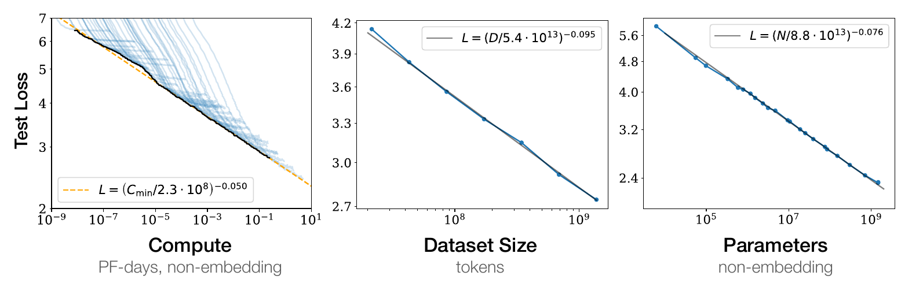
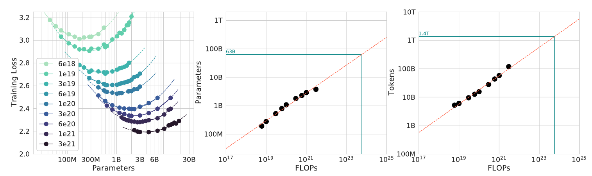

大模型看起来很复杂，但训练的基本目标很直接：根据前面的内容，预测下一个 token。Token可以粗略理解为文字被切分后的基本单位。
从这个目标出发，我觉得有两个问题值得想清楚：预测准确，意味着什么？为什么增加模型、数据和算力，通常能让预测更准确？
先看第一个问题。
假设实际出现的下一个 token 是“北京”，模型给它分配的概率是 p，这次预测的损失就是：
模型给正确答案的概率越高，损失越小。概率是 1/2，损失是1；概率是 1/8，损失是3。训练就是不断调整模型，让实际出现的内容获得更高的预测概率。
这个公式也连接着信息论：用模型给出的概率编码文本，预测损失对应着理想情况下所需的编码长度。
容易预测的内容，需要更少的比特来描述。例如，一万个重复的“你好”，可以直接描述为“把你好重复一万次”。找到规律，就不必逐字记录。语言中的规律更复杂，但道理相通：模型越能准确预测文本，就越能帮助我们压缩文本。
因此，学习语言规律、提高预测准确性和压缩信息，存在直接的联系。
再看第二个问题：增加训练资源，能让模型进步多少？
2020年，Kaplan等人发现，语言模型的预测损失与模型规模、数据量和计算投入之间，在相当大的范围内存在稳定的关系。这就是 Neural Scaling Law，神经网络缩放定律。论文原文 ↗

以数据量为例，一种常见的表达是：
这里，D 是训练数据量，L(D) 是平均预测损失，Lmin 是模型在给定条件下趋近的损失下限。A 和 α 决定曲线的形状，需要通过实验估计。
公式表达的意思很简单：数据越多，损失越低，但继续降低损失需要越来越多的数据。
它的重要性在于可预测。研究者可以先训练一批小模型，测出变化趋势，再估计扩大规模后的效果，从而决定应该投入多少资源。
但模型、数据和算力需要配合增长。Chinchilla的研究表明，在他们研究的条件下，增加模型参数时，也应增加训练数据，才能更有效地利用算力。一个容量很大的模型，需要充分训练才能发挥作用。论文原文 ↗

这两个公式的性质有所不同：第一个直接联系了预测与信息编码；第二个总结了实验中观察到的规模规律。信息论帮助我们理解模型在优化什么，Scaling Law帮助我们估计扩大投入能获得多少改善。
对我来说，这提供了一个理解大模型的起点：模型从数据中学习规律，用规律减少预测的不确定性。更多资源让这个过程走得更远，更好的方法则可能让同样的资源学到更多。
预测损失能够下降到什么程度，可以通过实验研究；这种改善又能转化成多少推理、编程或解决实际问题的能力，还需要分别验证。